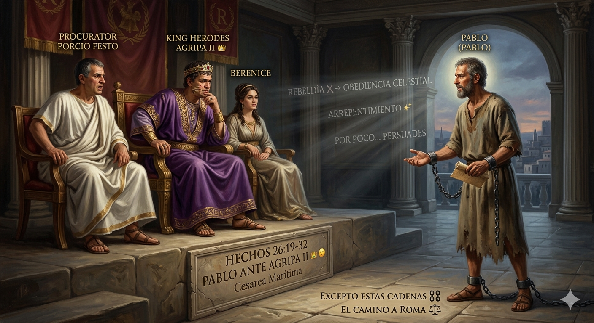

El lugar donde tu tormento se transforma en testimonio.
Bienvenidos a Casa Necesito OraciónSomos una comunidad de fe en Palmdale, California, que cree en el poder de la restauración total. No nos importa tu pasado, nos importa tu futuro con Dios.
A veces la vida nos paraliza y el dolor de la espera se vuelve insoportable. Pero la parálisis no es tu final. Dios está moviéndose en la vida de su iglesia y quiere traerte de vuelta a un lugar de paz.
El evangelio no es una religión de cargas, es un camino de libertad. Jesús pagó el precio para sanar cada herida profunda. Si estás listo para experimentar una transformación real, hoy es el día para dar el primer paso.

En el clímax de Hechos 26:19-32, el apóstol Pablo no se limita a defenderse en un juicio legal; transforma el estrado imperial en un púlpito para confrontar la conscience de la élite política. Frente al procurador Festo, quien tilda el Evangelio de locura por su racionalidad pagana, y ante el rey Herodes Agripa II, quien poseía el conocimiento de las Escrituras pero cuidaba su estatus, Pablo revela que el Evangelio es un hecho público: 'no se ha hecho esto en algún rincón'.
El llamado de Pablo exige tres movimientos: Arrepentirse (metanoein: reorientación radical de la mente), volverse a Dios y realizar obras dignas que sirvan como evidencia de una transformación de identidad.
La respuesta de Agripa, 'Por poco me persuades', desnuda el peligro de la cercanía intelectual sin conversión moral. Estar convencido de la verdad no equivale a rendir la corona del corazón.
“Casi salvado es perderse por completo. Detenerse antes de Cristo es perecer. Un hombre puede estar a un centímetro del cielo y sin embargo ser arrojado al infierno.”
El cautiverio más difícil de romper no es el de las cadenas de hierro que cargaba el apóstol, sino el de la indecisión. La ironía del juicio humano absolvió a Pablo formalmente, pero la providencia utilizó esas leyes para llevarlo al corazón del Imperio. No te detengas en la orilla de la fe: ya no eres el rey de tu vida, Cristo reclama el trono de tu corazón.
Creemos firmemente que la oración activa el poder sobrenatural de Dios. Nadie debería cargar con sus aflicciones a solas. Escribe tu petición abajo; nuestro equipo pastoral e intercesores estarán clamando por tu restauración total, tu familia y tus necesidades esta misma semana.
César Contreras
Hno. Henry Banderas
9:00 AM — Servicio Principal y Escuela Dominical
7:30 PM — Servicio de Intercesión Profunda
Nos encantaría recibirte en persona. Si tienes preguntas sobre nuestra comunidad, no dudes en escribirnos o visitarnos.